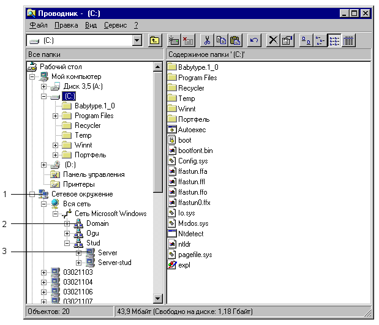

НАЧАЛА РАБОТЫ В СЕТЯХ WINDOWS
1. Регистрация в локальной сети
При включении компьютера, подключенного к локальной сети, Windows
предлагает зарегистрироваться. Для этого требуется ввести в поля диалогового окна регистрации
следующую информацию:
- В поле “Имя” — свое сетевое имя. При необходимости можно переключить раскладку клавиатуры
(русская/английская) с помощью сочетания клавиш ALT+SHIFT.
- В поле “Пароль” — пароль входа в систему. При введении пароля он не отображается на экране.
Вместо набираемых на клавиатуре символов в этом поле появляются звездочки “*”.
- В поле “Домен” — имя домена, в котором Вы зарегистрированы.
Если Вы неправильно ввели хотя бы один из этих параметров, Вы не сможете начать работу с
компьютером.
Если Вы не хотите, чтобы посторонние людиимели доступ к Вашим данным, храните свой пароль в
тайне. При необходимости пароль может быть изменен администратором сети.
2. Просмотр списка доступных ресурсов

Рис. 4.1. 1 — значок папки “Сетевое окружение” в Проводнике; 2 — значок домена с
именем “Domain”; значок компьютера.
Под сетевыми ресурсами мы будем понимать доступные для совместного использования диски,
папки и принтеры.
- Дважды щелкните значок "Сетевое окружение" на Рабочем столе или в окне
Проводника. На экране развернется список компьютеров текущего домена. Здесь под доменом мы
понимаем группу компьютеров, объединенных по некоторым признакам. Чтобы просмотреть список
всех доступных ресурсов, щелкните значок "Вся сеть".
- Дважды щелкните значок нужного домена. Появится список всех компьютеров выбранного домена.
- Дважды щелкните значок компьютера, общие ресурсы которого необходимо просмотреть, и
выберите из списка нужный ресурс.
Если выбранный ресурс является папкой, с ним можно обращаться как с обычной папкой.
Если искомый ресурс недоступен, возможно, у вас недостаточно прав доступа. Обратитесь к
администратору локальной сети.
3. Подключение сетевого диска
При частой работе с одной и той же общей папкой имеет смысл сопоставить этой папке
логический диск, например D: или E: (этот процесс называется подключением диска). Тогда для
доступа к содержимому папки достаточно будет дважды щелкнуть ее значок в папке "Мой компьютер"
или в окне Проводника Windows.
Для подключения сетевого диска выполните следующие действия:
- Нажмите кнопку “Подключить сетевой диск”
на панели инструментов.
- В поле “Путь” введите сетевое имя ресурса, который следует подключить
в формате UNC (т.е. в виде “\\имя_компьютера\имя_папки”). Например, для подключения в качестве
сетевого диска папки с именем “Задания”, находящейся на компьютере с именем
“Server-Stud”, в поле “Путь” нужно ввести строку
\\server-stud\задания.
- Если для доступа к ресурсу требуется указать пароль, Windows запросит его.
Если имя нужного ресурса неизвестно, то его можно найти в сети следующим образом:
- Щелкните значок папки "Сетевое окружение", а затем укажите компьютер, содержащий общую
папку. Для просмотра других компьютеров щелкните значок "Вся сеть".
- Дважды щелкните значок папки, к которой требуется получить доступ.
- После того, как нужная папка найдена, ее можно подключить в качестве сетевого диска с
помощью команды Подключить сетевой диск контекстного меню папки.
4. Отключение сетевого ресурса
Чтобы отключить сетевой ресурс, либо выберите в его контекстном меню пункт Отключить,
либо щелкните кнопку Отключить сетевой ресурс
панели инструментов Проводника.